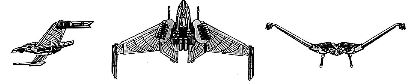

V-30 Winged Defender-class Light Cruiser (RSE)

Battle Stats
Engines and Superstructure
Total Power Units - 64 (Warp Engines - 2x24, Impulse Engines - 16)
MPR - 4/1
Superstructure - 30
Maximum Warp - 2
Industry Points to Build - 7
Beam Weapons (Disruptors)
Max Power - 6
Firing Chart - W
Arcs - 4F, 1P, 1S, 1P/A, 1S/A
Bonuses - +3(1-8) +2(9-16) +1(17-20)
Missile Weapons (Plasma Torpedoes)
Power to Arm - 8
Damage - See chart
Firing Chart - T
Arcs - 1F
Deflector Shields
Max Shield Power - 15
SPR - 1/3
Plasma Torpedo Damage Chart
Range | Damage
1-4 | 28
5-8 | 24
9-11 | 20
12-13 | 16
14-15 | 12
13-14 | 8